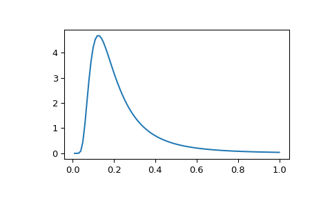

scipy.stats.invwishart¶
-
scipy.stats.invwishart= <scipy.stats._multivariate.invwishart_gen object>[source]¶ An inverse Wishart random variable.
The df keyword specifies the degrees of freedom. The scale keyword specifies the scale matrix, which must be symmetric and positive definite. In this context, the scale matrix is often interpreted in terms of a multivariate normal covariance matrix.
- Parameters
- xarray_like
Quantiles, with the last axis of x denoting the components.
- dfint
Degrees of freedom, must be greater than or equal to dimension of the scale matrix
- scalearray_like
Symmetric positive definite scale matrix of the distribution
- random_stateNone or int or np.random.RandomState instance, optional
If int or RandomState, use it for drawing the random variates. If None (or np.random), the global np.random state is used. Default is None.
- Alternatively, the object may be called (as a function) to fix the degrees
- of freedom and scale parameters, returning a “frozen” inverse Wishart
- random variable:
- rv = invwishart(df=1, scale=1)
Frozen object with the same methods but holding the given degrees of freedom and scale fixed.
See also
Notes
The scale matrix scale must be a symmetric positive definite matrix. Singular matrices, including the symmetric positive semi-definite case, are not supported.
The inverse Wishart distribution is often denoted
\[W_p^{-1}(\nu, \Psi)\]where \(\nu\) is the degrees of freedom and \(\Psi\) is the \(p \times p\) scale matrix.
The probability density function for
invwisharthas support over positive definite matrices \(S\); if \(S \sim W^{-1}_p(\nu, \Sigma)\), then its PDF is given by:\[f(S) = \frac{|\Sigma|^\frac{\nu}{2}}{2^{ \frac{\nu p}{2} } |S|^{\frac{\nu + p + 1}{2}} \Gamma_p \left(\frac{\nu}{2} \right)} \exp\left( -tr(\Sigma S^{-1}) / 2 \right)\]If \(S \sim W_p^{-1}(\nu, \Psi)\) (inverse Wishart) then \(S^{-1} \sim W_p(\nu, \Psi^{-1})\) (Wishart).
If the scale matrix is 1-dimensional and equal to one, then the inverse Wishart distribution \(W_1(\nu, 1)\) collapses to the inverse Gamma distribution with parameters shape = \(\frac{\nu}{2}\) and scale = \(\frac{1}{2}\).
New in version 0.16.0.
References
- 1
M.L. Eaton, “Multivariate Statistics: A Vector Space Approach”, Wiley, 1983.
- 2
M.C. Jones, “Generating Inverse Wishart Matrices”, Communications in Statistics - Simulation and Computation, vol. 14.2, pp.511-514, 1985.
Examples
>>> import matplotlib.pyplot as plt >>> from scipy.stats import invwishart, invgamma >>> x = np.linspace(0.01, 1, 100) >>> iw = invwishart.pdf(x, df=6, scale=1) >>> iw[:3] array([ 1.20546865e-15, 5.42497807e-06, 4.45813929e-03]) >>> ig = invgamma.pdf(x, 6/2., scale=1./2) >>> ig[:3] array([ 1.20546865e-15, 5.42497807e-06, 4.45813929e-03]) >>> plt.plot(x, iw)
The input quantiles can be any shape of array, as long as the last axis labels the components.
Methods
``pdf(x, df, scale)``
Probability density function.
``logpdf(x, df, scale)``
Log of the probability density function.
``rvs(df, scale, size=1, random_state=None)``
Draw random samples from an inverse Wishart distribution.